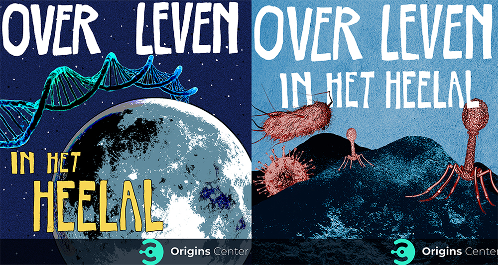
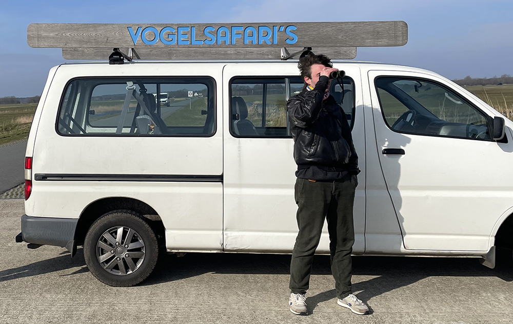
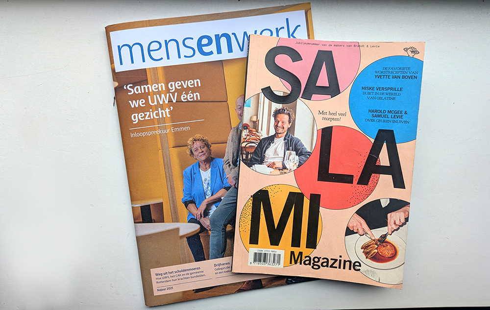
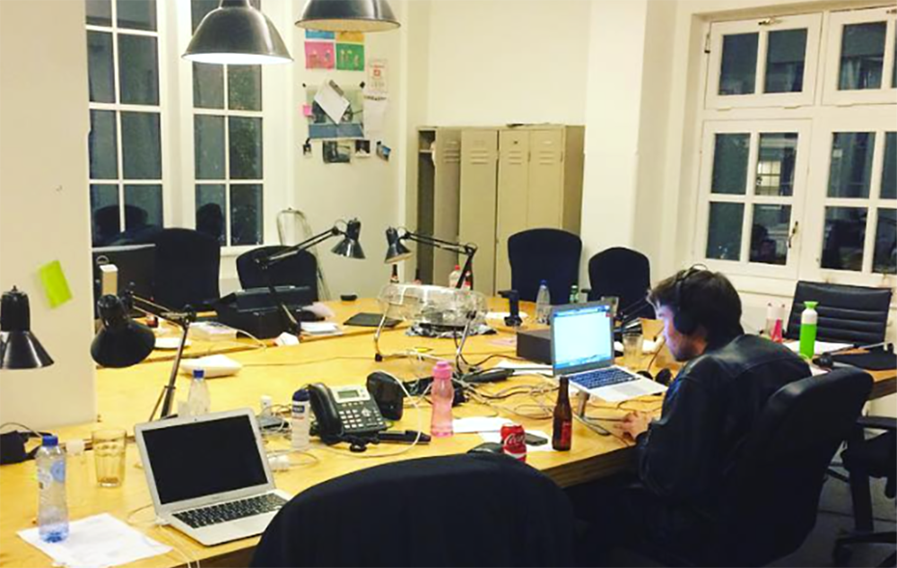
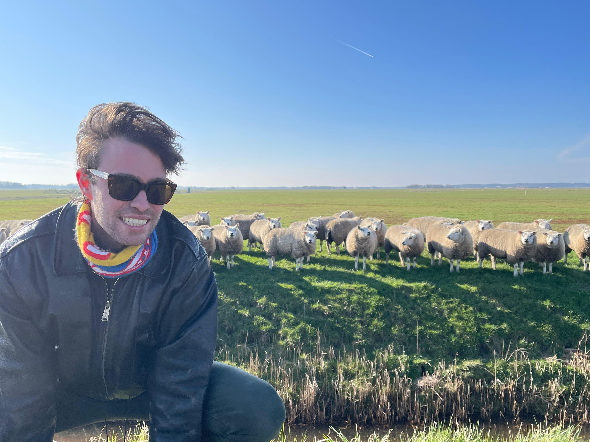

Een warm welkom op de website van Ewout Lowie, boordevol informatie over Ewout Lowie. Mensen omschrijven mij als een getalenteerd werkpaard zonder wiens hulp jouw project een stuk minder goed wordt. Ik ben sinds 2020 freelance redacteur/journalist en <3 verhalen in tekst, audio en video. Daarvoor heb ik lang op de redactie en hoofdredactie van VICE gewerkt.
Bedankt alvast!
Ik heb research gedaan voor verschillende documentaires(eries). Hiernaast zie je de trailer (met mijn boevige voice-over) van Pact met de Duivel (Prime Video). De serie gaat over het Passage-proces - de grootste afgeronde liquidatie-rechtszaak ooit, over loeizware criminelen als Dino Soerel en Willem Holleeder en over verontrustende tactieken in de rechtszaal.
Andere series waar ik research voor deed zijn: Ik Weet je Wachtwoord (Videoland), Explosief Nederland (Videoland), Snoepjes (Canal+), een serie over stormchasers (Powned) en In Bob We Trust (Prime Video - een waanzinnige cultdocu van regisseur Martijn Goris).
Vanwege een fascinatie voor aliens en het heelal bedacht ik een wetenschappelijke podcastserie, die ik mocht maken voor Origins Center.
Hier een stukje tekst om bij wijze van placeholder. Want er moet wel een beetje vlees aan het bot zitten.


Hier een stukje tekst over dat ik dit kan en gedaan heb. Over wat er leuk aan is en waar ik goed in ben. Geweldig allemaal. Dit is een proeftekstje om bij wijze van placeholder.
Vier of vijf VICE-artikelen en mijn Substack.
Ik heb voor verschillende bureaus teksten geschreven, die terechtkwamen in magazines van UWV, de website van ProRail, Samuel Levi, en zelfs in de Jumbo! Ik vroeg Mohamed Ihattaren hoe hij verkleed was met carnaval en aan de president van de Algemene Rekenkamer wat de nadelen zijn van versimpeling van uitkeringsbeleid. Zolang ik mag interviewen voor geld is denk ik mijn lievelingsding ever!!!


Je zou een bibliotheek kunnen vullen met het aantal verhalen die ik heb lopen redigeren in mijn werkende leven. Veel voor VICE, tegenwoordig ook voor De Correspondent. Hiernaast zie je hoeveel toewijding ik dat doe: als enige achter m'n laptop als iedereen al lang naar huis is of juist nog niet eens op kantoor.
Mijn iets serieuzere leven, na 23 jaar Mariokarten en schoolzwemmen, begon in de jaren 10 van deze eeuw. Ik deed een bachelor Communicatiewetenschappen (meh) en een master Sociologie (sick) en werkte lange tijd op de redactie van VICE, waar ik schreef en redigeerde en de redactie leidde. Sinds 2020 ben ik freelancer en deed ik de dingen die ik op deze website heb geschreven.
